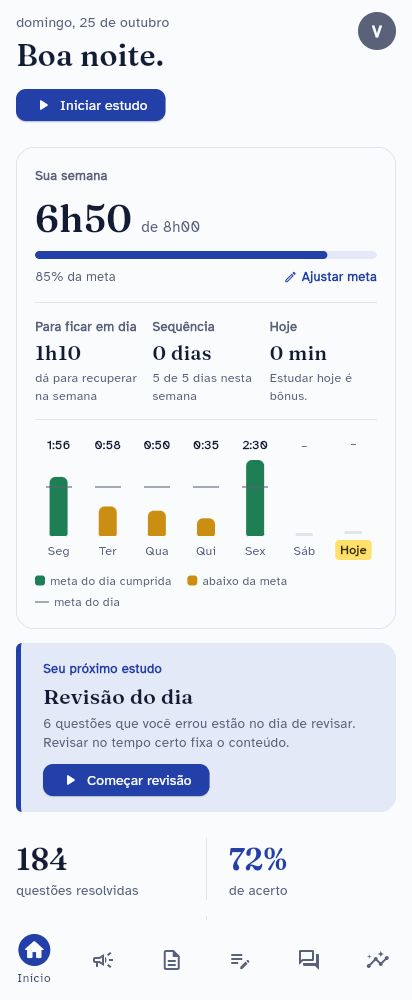

NOVO em teste
O Aprova no celular Android
O mesmo app, instalado no celular, sem precisar do computador ligado: provas, revisão, metas e os seus grupos no bolso.
- Abra esta página no celular e toque em Baixar para Android.
- Abra o arquivo baixado. Se o Android pedir, permita instalar apps desta fonte.
- Toque em Instalar e pronto.
Depois de instalado, o app avisa quando sai versão nova e atualiza por cima (quem tem a 1.27 ou anterior precisa desinstalar uma última vez). O app do celular ainda está em teste: se algo não funcionar, conte para a gente. Celular mais antigo (32 bits)? Use este outro arquivo. iPhone: em preparação.
